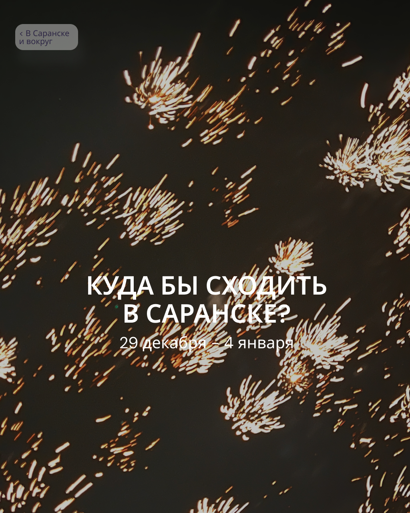
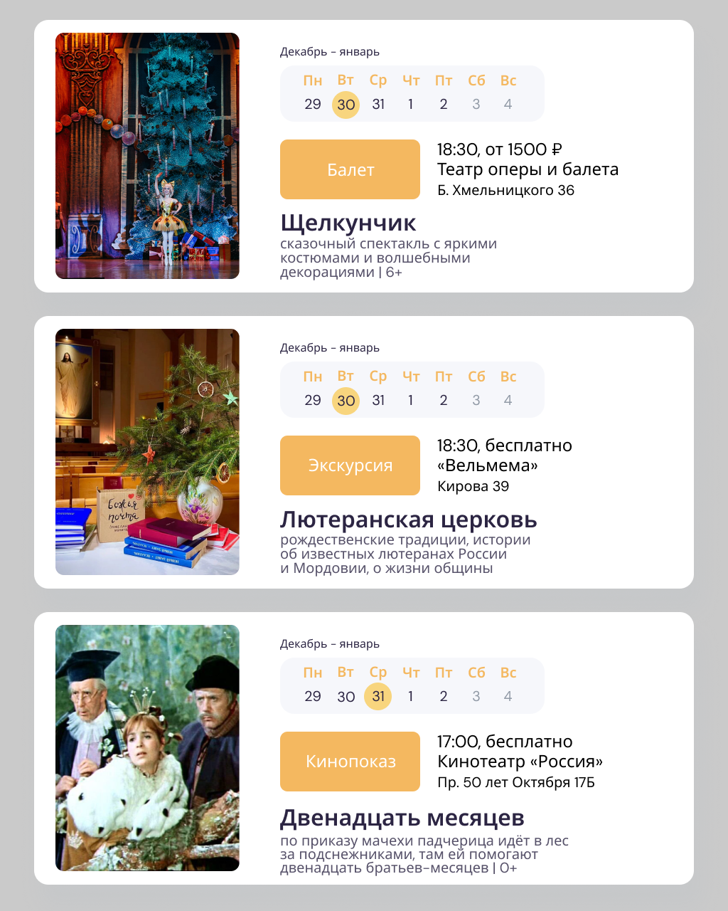
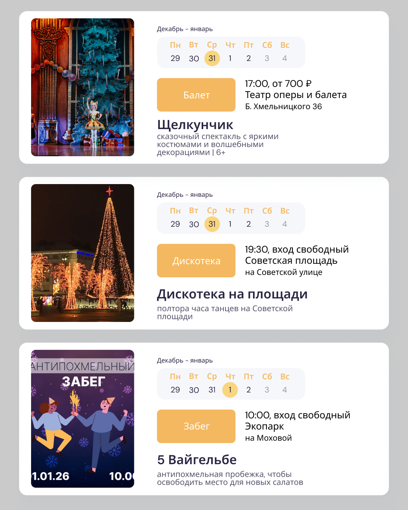
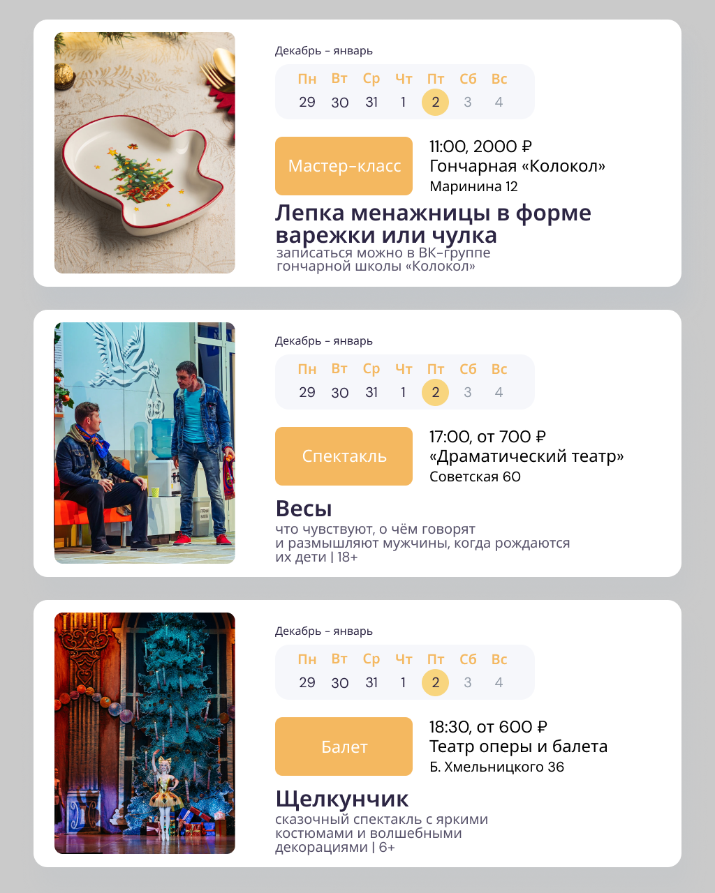
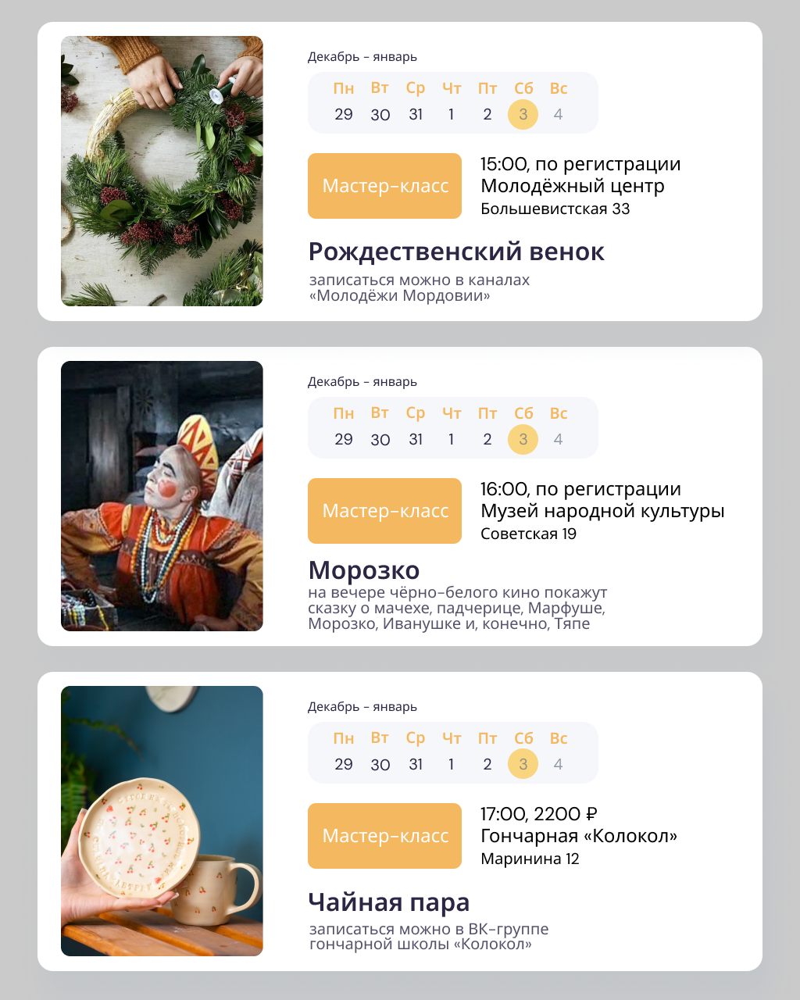
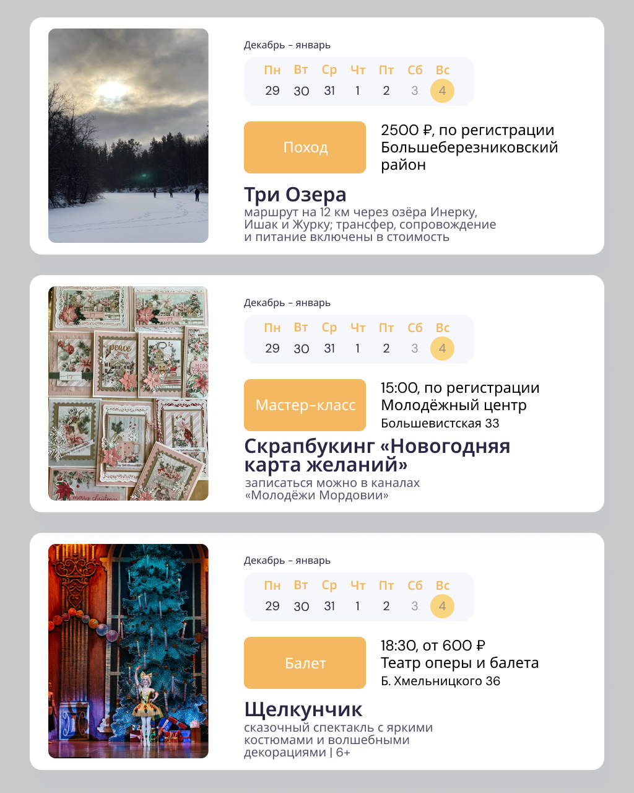

Курсы в Optimacros
С марта 2024 года работаю редактором в центре обучения «Оптимакрос Практикум». Отредактировала четыре курса, которые помогают моделерам освоить профессию.
Результат, которого мы добились с командой авторов для новых курсов:
- Практически не тратим время на сопровождение курсов — возникают единичные вопросы.
- Не копим бэклог: багов немного, устраняем их за одну-три недели обучения первого потока. Последний курс «Интеграции» выпустили в конце 2025, после выпуска обнаружили меньше пяти багов.
Тексты — без сложных формулировок. Тесты, акценты, инфографика — чтобы помочь студенту понять.
Работа
с фактурой
Редактирую курс, который перешёл от другой команды. На проекте поставила перед собой цели:
Два примера, как превращаю текст из фактуры в учебный материал: в гугл-доке.
Чем я ещё полезна
своей команде
Делюсь опытом
Даю обратную связь авторам о проблемных местах, провожу обучающие встречи, ввожу людей в процессы.
Веду Телеграм
Пишу для канала «Оптимакрос Практикум». Работаем в формате витрины — рассказываем об обновлениях и подходах. С канала приходят продажи. Коллеги используют посты в своей работе.
Помогаю с любыми текстами
Типовые сообщения для студентов, тексты вакансий, КП и всякое. Верстаю материалы в Тильде и Фигме.
Сопровождаю студентов
Разобралась в моделировании и помогаю ученикам.
Тексты об айти
в SimbirSoft
Пришла в SimbirSoft в августе 2021 года исполнителем, который знал, что в айти-команде существуют тестировщики и программисты. К концу понимала роль каждого на проекте и их птичий язык. Стала редактором контента от frontend-направления: искала темы, контролировала сроки, редактировала. Работала с маркетинговыми материалами: от реклам до страниц услуг или лид-магнитов.
Личный проект
«В Саранске и вокруг»
В 2025 году завела канал о родном городе. Хотела изменить, что знакомые из раз в раз заявляют: «В Саранске ничего не происходит». Афиша в «Яндексе» или на других сайтах не решала проблему. Потому что там кнопки надо было нажимать, а ещё части мероприятий не было или были все мероприятия на свете. Неотсортированные. Я сделала свою афишу недели.
Каждую неделю я отбирала мероприятия 12+, которые нравятся мне. И верстала в картинки по три события — с календарём недели. Со временем малознакомые люди стали благодарить меня, потому что у них поменялось восприятие: каждую неделю что-то показывают, только успевай ходить. Я горжусь этим маленьким проектом.






Обо мне
Мои ценности: гуманизм, движение и развитие, семья, польза.
Люблю работать с проектами не однодневками. Например, как сейчас — сотни людей проходят курсы «Оптимакрос Практикум» и получают профессию. Вау!
К миру отношусь ответственно. Улыбаюсь продавцам, сдаю вещи на благотворительность и всякое. Недавно завела ютуб-канал, в котором коротко и с юмором показываю, как легко выкидывать мусор в мусорку во время прогулок: «Чисто привычка». Потом придумаю что-то ещё.
Обсудить задачи
приглашаю в Телеграм.